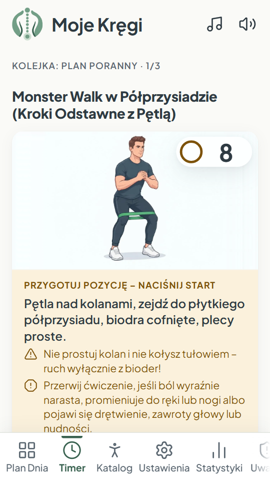
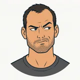
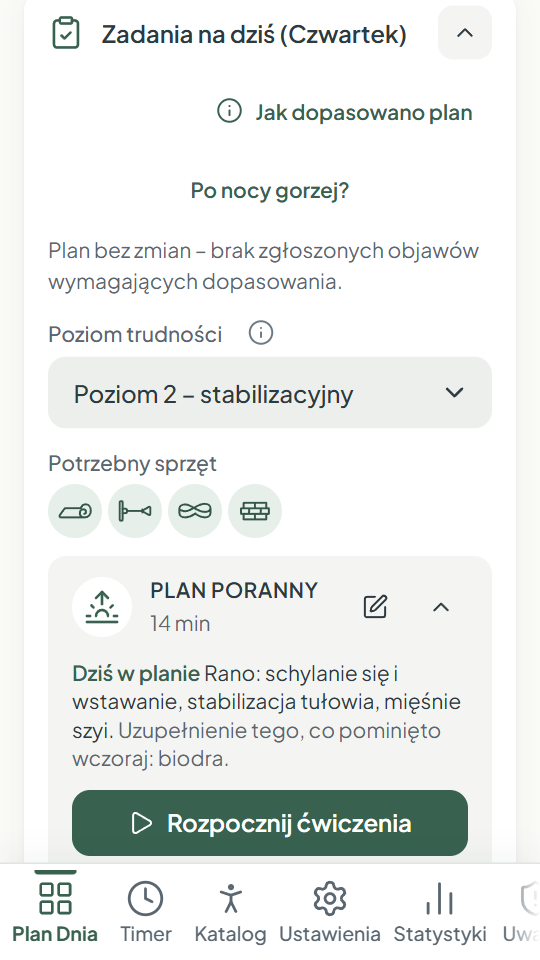
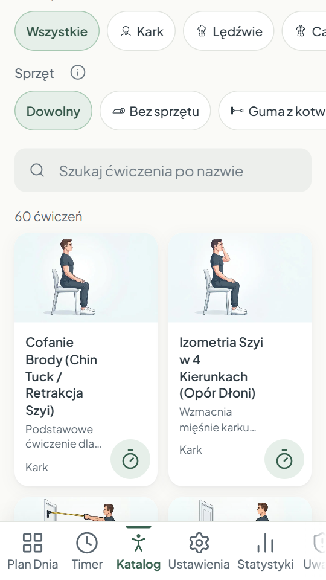
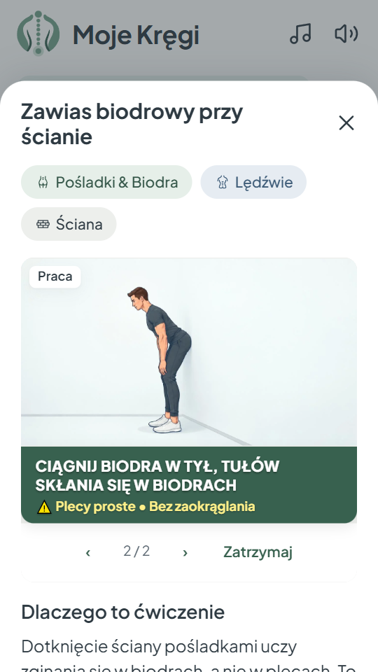
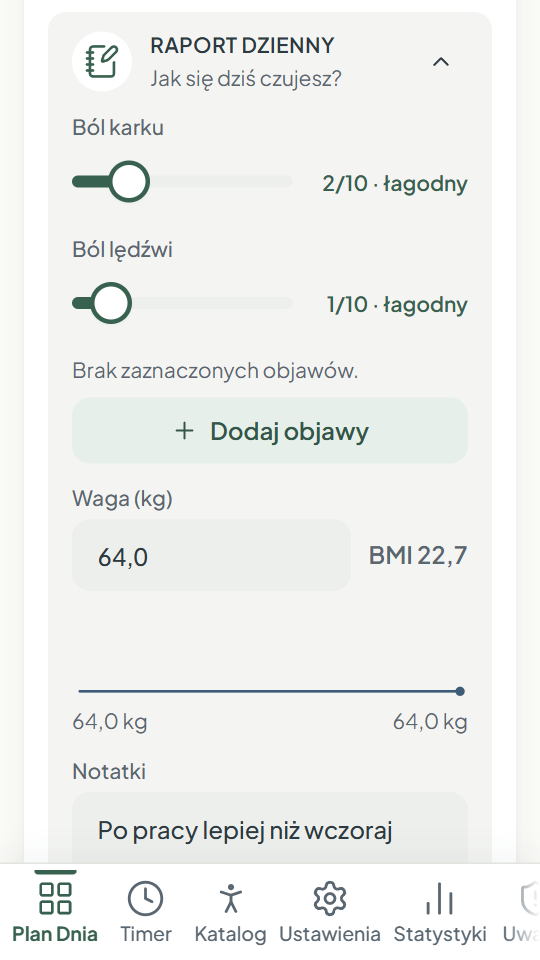
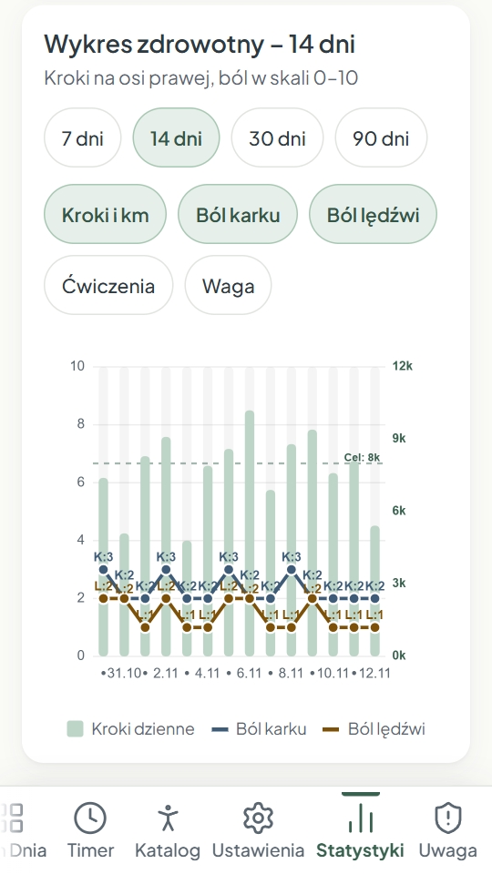
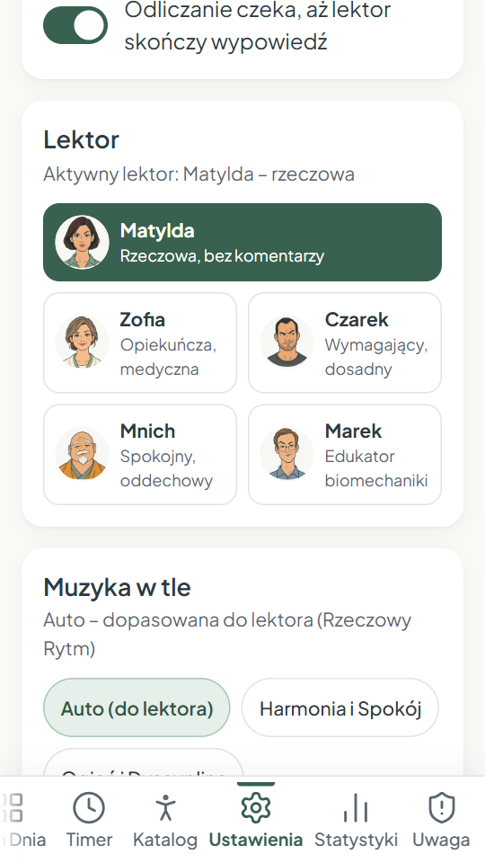
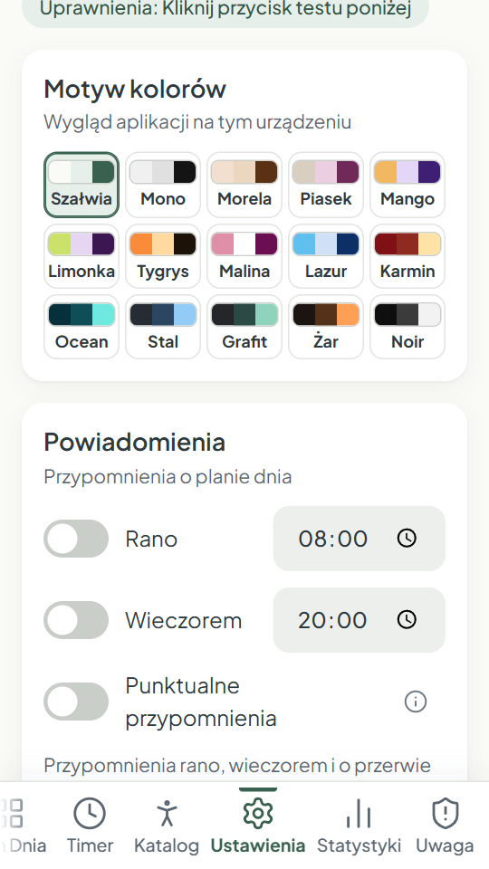

Profilaktyka kręgosłupa na co dzień
Codzienny ruch dla Twojego kręgosłupa
Plan na cały dzień, timer z lektorem po polsku i 74 ćwiczenia na kark, plecy i biodra – dobierane do tego, jak się dziś czujesz i jaki masz sprzęt.
- Jednorazowy zakup
- Bez reklam
- Bez abonamentu
- Bez internetu
- Po polsku
Aplikacja na Androida. Wersja tylko w języku polskim.

- 74ćwiczenia
- 3pory dnia
- 5lektorów
- 0 złabonamentu
Zobacz, jak to działa
Twój dzień z Moimi Kręgami
Krótkie sesje wplecione w zwykły dzień – bez szukania czasu na długi trening.
Rano
Kilkuminutowa sesja na rozruszanie karku, pleców i bioder po nocy.
Przerwy od siedzenia
Krótkie zestawy przy biurku, z przypomnieniem co ustalony czas.
Wieczór
Spokojniejsza sesja i raport dnia: jak się czujesz, co dolegało.
Jak aplikacja dobiera ćwiczenia
Za planem stoi silnik doboru, który działa jak lejek: najpierw odsiewa to, co dziś może zaszkodzić, potem z bezpiecznej puli wybiera ćwiczenia najlepiej dopasowane do Ciebie i ustala dawkę. Każdą decyzję widzisz w aplikacji pod „Jak dopasowano plan”.
Najpierw bezpieczeństwo
Objawy alarmowe z wywiadu i raportów zawsze kończą się zaleceniem konsultacji z lekarzem, a przy poważnych plan nie proponuje ćwiczeń. Przeciwwskazania (np. osteoporoza, ciąża, stan po operacji) wykluczają nieodpowiednie ćwiczenia. Tych filtrów nic nie zdejmuje – gdy brakuje zamiennika, aplikacja wybiera łagodniejszą wersję albo krótszy plan.
Dopasowanie do Ciebie
Liczy się sprzęt, który masz, wybrany poziom trudności, obszary, na których chcesz się skupić, i ból karku oraz lędźwi z ostatnich raportów – wygładzony, żeby jeden gorszy dzień nie wywracał całego planu.
Równowaga i różnorodność
Plan uzupełnia to, czego brakowało w ostatnim tygodniu, nie powtarza ciągle tych samych ćwiczeń i rozkłada pracę między poranek, przerwy i wieczór.
Dawka na dziś
Serie, powtórzenia i czas mieszczą się w bezpiecznych widełkach. Po zgłoszonym bólu albo reakcji na ćwiczenie dawka maleje, a przy stabilnym samopoczuciu może stopniowo rosnąć.
Plan reaguje na raport
Po raporcie dnia aplikacja przelicza nierozpoczęte sesje: wieczorną, kolejne przerwy i plany na następne dni.
Ćwiczenia na każdą partię
Katalog filtrujesz po partii ciała i sprzęcie. Każde ćwiczenie ma ilustracje etapów ruchu, opis, najczęstsze błędy i przeciwwskazania.
- Kark
- Odcinek piersiowy i łopatki
- Lędźwie
- Cały kręgosłup
- Brzuch i core
- Pośladki i biodra
- Przy biurku
Ćwiczysz z tym, co masz
Większość ćwiczeń nie wymaga sprzętu. Zaznaczasz w aplikacji, co masz pod ręką, a plan sięga tylko po to.
- Bez sprzętu
- Mini-pętla
- Guma z kotwicą do drzwi
- Długa guma
- Hantle 1–3 kg
- Krzesło
- Krzesło bez kółek
- Ściana
- Ręcznik
- Framuga
Pięcioro lektorów mówiących po polsku
Lektor prowadzi przez każde ćwiczenie: mówi, co robić, pilnuje tempa i przypomina o oddechu. Wybierasz styl, który Ci pasuje.
- Zofiaopiekuńcza i ciepła
- Matyldarzeczowa, bez zbędnych słów
- Marektłumaczy, jak pracują mięśnie
- Mnichspokojny, skupiony na oddechu

Czarekwymagający, dosadny – przeklina
Zobacz aplikację







Napisane po polsku
To nie tłumaczenie zagranicznej aplikacji. Instrukcje, opisy i dialogi lektorów powstały od początku po polsku, z myślą o polskich użytkownikach.
Dane zostają u Ciebie
Aplikacja nie ma dostępu do internetu, kont ani serwera. Nic nie jest wysyłane – kopię zapasową robisz sam, kiedy chcesz.
Przypomnienia i statystyki
Przypomnienia o sesjach i przerwach, wykres samopoczucia, kroki z Health Connect, odznaki i 15 motywów kolorów.
Płacisz raz. Bez niespodzianek.
- Jednorazowy zakup w Google Play – cała aplikacja od razu.
- Bez abonamentu, mikropłatności i ukrytych kosztów.
- Bez reklam, bez konta i logowania.
- Działa bez internetu – także w podróży.
Ważne. Moje Kręgi to aplikacja o ogólnej aktywności fizycznej i profilaktyce dla osób dorosłych. Nie jest wyrobem medycznym, nie służy do leczenia i nie zastępuje porady lekarza ani fizjoterapeuty. Jeśli masz dolegliwości, jesteś po urazie, operacji albo w ciąży, przed rozpoczęciem ćwiczeń skonsultuj się z lekarzem. Przy bólu promieniującym do ręki lub nogi, drętwieniu albo osłabieniu siły nie ćwicz i skontaktuj się z lekarzem. Gdy podczas ćwiczeń pojawi się niepokojący objaw, przerwij i skontaktuj się z lekarzem.